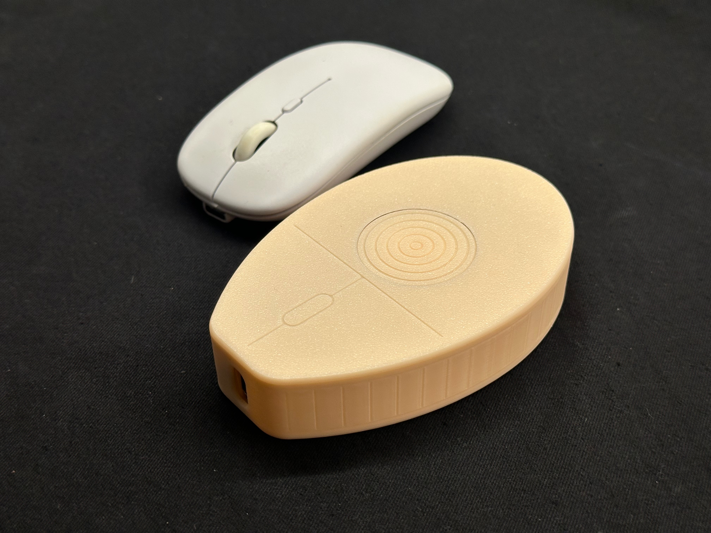
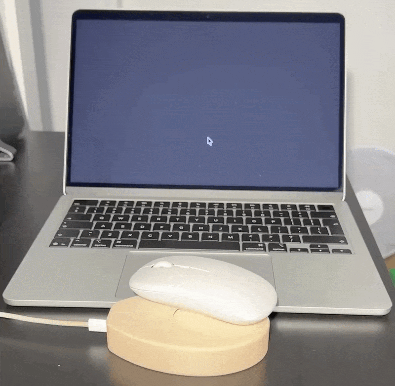
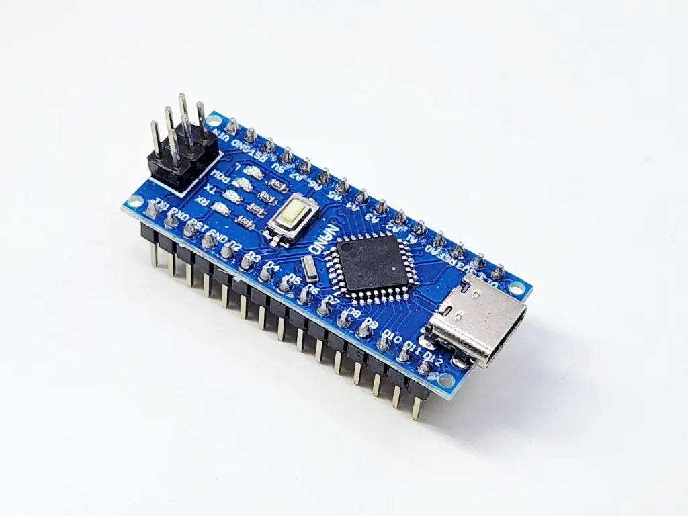
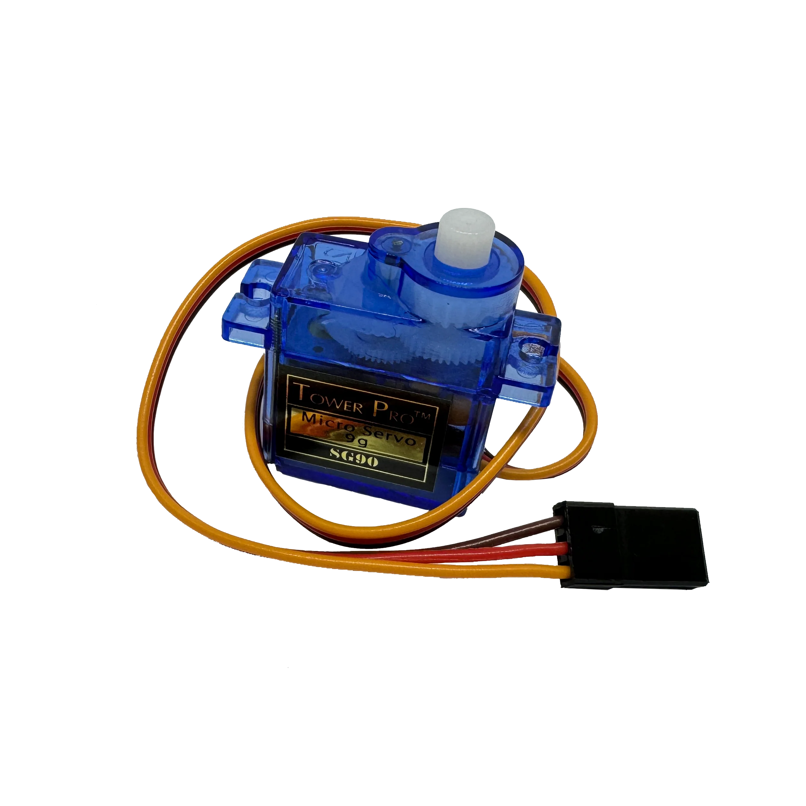
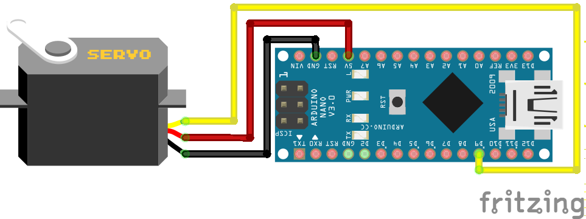
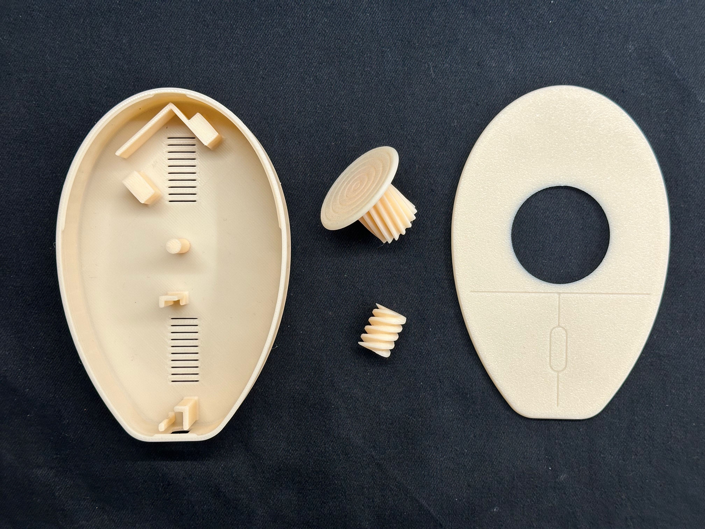
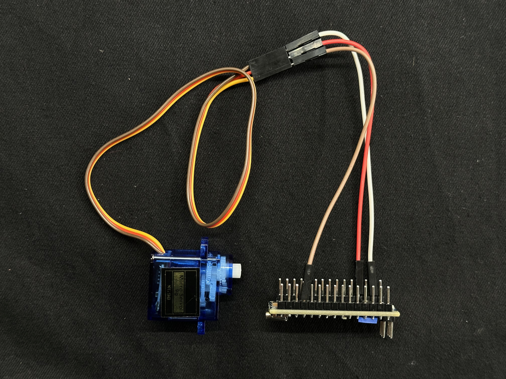
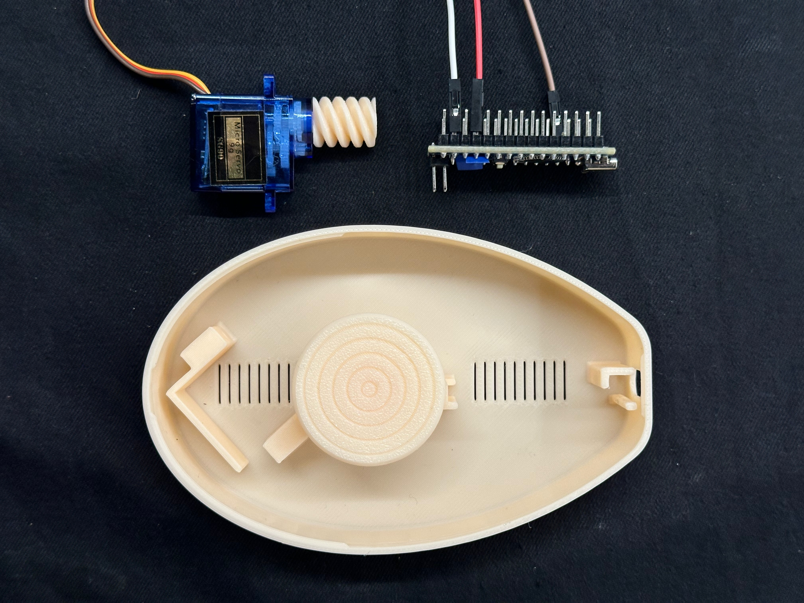
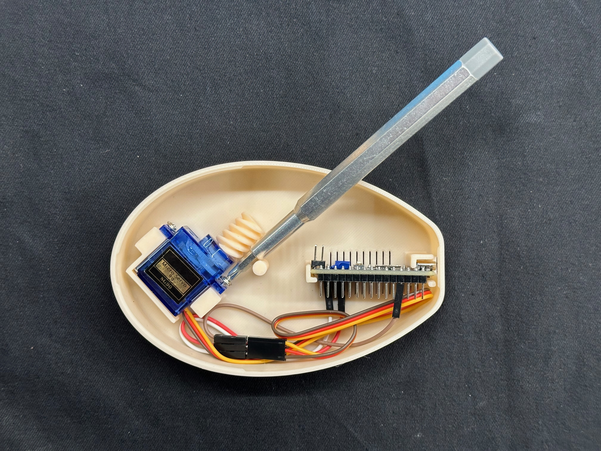
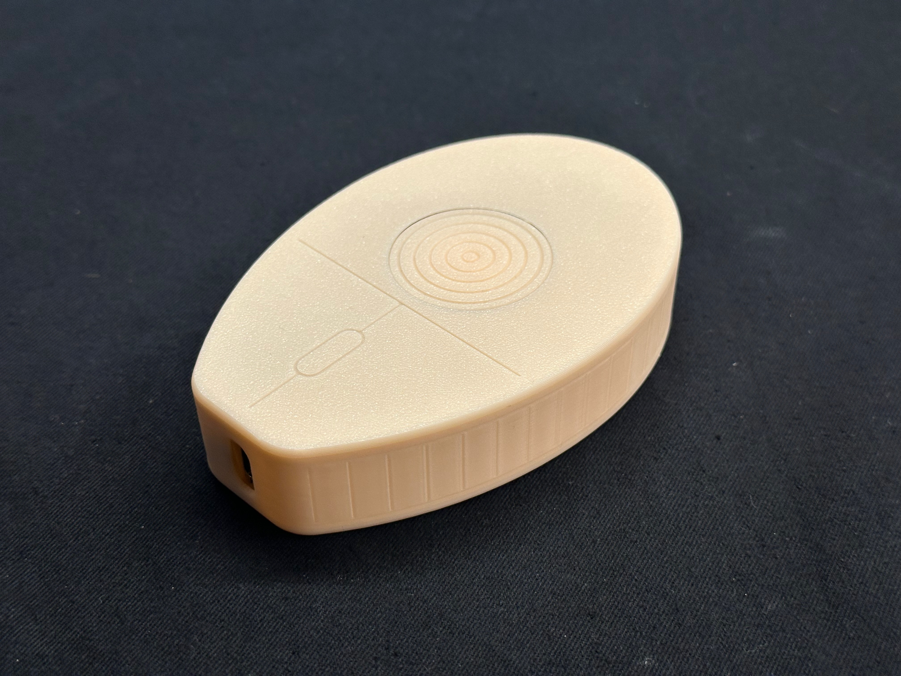

JiggleMouse
JiggleMouse is an undetectable, physical hardware solution to keep your computer awake. Whether you are waiting for a massive 3D render to finish, downloading a huge game overnight, or simply stepping away to make coffee without your corporate chat switching to "Away," this open-source tool has your back. Completely plug-and-play with zero background software required.

Device Features
- 🔌 100% Undetectable: Moves a physical mouse sensor. No suspicious USB HID drivers or background apps for IT to flag.
- 📏 Ultra-Compact & Efficient: Smaller than a standard mouse and takes only a few grams of filament to print. Despite its tiny footprint, it easily supports mice much larger than itself!
- 🛠️ Solderless Assembly: Build the entire project in minutes using standard jumper wires. No soldering iron required.
- 💾 Persistent Memory: Saves your speeds, timings, and boot preferences directly to the Arduino's EEPROM.
- 🌐 Web Configured: Connect to this page anytime to update settings via the Web Serial API — no coding required.
- ⚡ Start on Boot: Configure the device to automatically start jiggling the moment it receives USB power.

How it works
- 🧠 The Brains: An Arduino Nano sends precise control signals to a servo motor. You can fully customize the rotation speed, direction, and pause intervals directly from your browser.
- ⚙️ The Mechanism: The servo spins a 3D-printed worm gear (which replaces the default plastic servo horn). This worm gear continuously drives a larger involute gear, rotating a flat jiggler disk mounted on a central rod.
- 📏 The Clearance: The spinning disk is engineered to sit a fraction of a millimeter below the top lid. This tiny offset ensures the rotating plastic never rubs against or scratches the bottom of your mouse.
- 🪄 The Illusion: When you place your mouse on top, its optical sensor detects the surface of the spinning disk. The mouse interprets this moving pattern as actual physical travel, sending standard movement signals to your PC and moving your cursor!

Step 1: Hardware & Wiring

Arduino Nano
Type-C Recommended
The brains of the operation. Small, cheap, and easily programmable via USB. You can use an original board or any affordable clone you can find online.

SG90 Servo Motor
360° Continuous
Crucial requirement: Standard 180° servos will not work. You must use the 360-degree continuous rotation version so the jiggler disc can spin freely.
Wiring Diagram

| Servo Wire (Typical Color) | Arduino Nano Pin | Notes |
|---|---|---|
| GND (Brown or Black) | GND | Ground connection |
| VCC (Red) | 5V | Power supply for the motor |
| Signal / Data (Orange or Yellow) | D2 | Default control pin (Can be altered in code later if needed) |
Assembly Instructions
Step 1: Print the Case

Download the 3MF or STL files from MakerWorld and print them on your 3D printer. The entire device consists of just four printed parts, making assembly a breeze. You won't need any extra hardware—no screws, nuts, or bolts required! Everything is designed to snap together with a snug, secure fit. The base features custom inserts to hold the servo motor, Arduino Nano, and rotating disk perfectly in place, along with built-in cutouts to keep the electronics cool.
Download on MakerWorldStep 2: Wiring

Connect the Arduino and the servo motor using standard male-to-female jumper wires. Simply insert the male ends into the Arduino and slide the female connectors over the servo's header pins. This plug-and-play setup requires absolutely zero soldering! However, if you prefer a more permanent build, you can always solder the connections directly. Don't worry too much about which digital pin you choose for the servo signal right now—you can easily remap it later in the web interface.
Step 3: Prepare the Gears

First, remove the stock plastic horn that comes pre-installed on your servo motor, and push the 3D-printed worm gear firmly onto the bare shaft.
Next, grab the larger involute gear (the one attached to the jiggler disk) and slide it onto its center pivot rod inside the case. As you seat the components, make sure the threads of both gears properly align and mesh together so the servo can smoothly drive the disk.
Step 4: Insert & Close

Press all your components into their designated slots inside the base. The Arduino Nano has a custom-fitted compartment—it is designed to be a tight squeeze, so don't be afraid to apply a little force until it clicks securely into place. While the servo motor usually includes mounting screws (and the case has holes for them), they are completely optional. The friction fit is strong enough to hold everything on its own.
Finally, tuck your wires neatly out of the way and snap the lid firmly onto the base.
Step 5: Connect, Flash & Control

Your hardware is fully assembled! Plug a USB cable into the Arduino and move on to Step 2 below to install the firmware. Once it is flashed, you can use the web-based Control Panel to tweak your jiggler's speed and movement patterns.
Don't let the compact size fool you—this jiggler works perfectly with almost any mouse on the market. Even if your mouse is large and hangs off the edges of the case, it will still work flawlessly. The only thing that matters is making sure your mouse's optical sensor rests directly over the rotating disk!
Step 2: Install Firmware
The easiest way to get started is using the Web Flasher below. Connect your Arduino Nano to your computer via USB. Note: Requires a Chromium-based browser (Chrome, Edge, Opera).
Because clone boards behave differently, you might need a few attempts. If the upload hangs or fails:
- Try both flash buttons in different orders.
- Unplug the USB cable, plug it back in, and refresh this web page.
- Manual Reset: If it continually times out, your board might lack an auto-reset circuit. Press and hold the physical RESET button on the Arduino, click a flash button on the screen, and release the physical button immediately after selecting your COM port.
Alternative: Compile via Arduino IDE
If the web flasher isn't cooperating, or if you simply want to tinker with the underlying code, you can compile and upload the firmware manually using the traditional Arduino IDE.
- Dependencies: The code relies entirely on the standard, built-in
Servo.handEEPROM.hlibraries. Zero external library downloads are required to compile! - Board Setup: Go to Tools > Board and select "Arduino Nano". Under Tools > Processor, toggle between "ATmega328P" and "ATmega328P (Old Bootloader)" depending on your board.
Step 3: Control Panel
Customize your jiggler's behavior on the fly. Adjust each parameter and click Set to apply changes immediately — all settings are automatically saved permanently to the device's memory. You can also monitor the built-in terminal below to view real-time device logs, including incoming data from the Arduino, outgoing commands, and connection errors. Connect your device, dial in your preferred settings, and run it live!